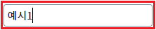
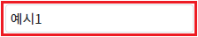
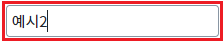
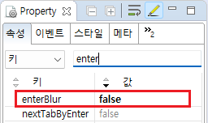

Input의 속성 'enterBlur' 예제입니다. 이 속성은 입력 영역에서 키보드(키패드)의 'Enter'키가 입력되었을 때 동작합니다.
속성의 설정 값에 따른 동작은 다음과 같습니다.
"true" : (기본 값) 포커스가 아웃(입력 커서가 없어짐)되고 이벤트 'onblur'가 발생합니다.
"false" : 별도의 동작을 하지 않습니다. 포커스가 유지됩니다.
속성 'enterBlur'의 설정 값을 'true'로 지정
속성 'enterBlur'의 설정 값을 'false'로 지정
STEP 1. Input의 입력 영역에서 키보드 'Enter' 키를 입력합니다.
예제 영역 [(기본 설정) 'Enter' 키 입력 시 포커스가 아웃되고 이벤트 'onblur' 발생]의 Input의 입력 영역에서 키보드 'Enter' 키를 입력합니다.그림 1.브라우저(Chrome) 실행 예시

STEP 2. 실행된 결과를 확인합니다.
Input에서 포커스가 사라지고 이벤트 'onblur'가 발생합니다. '로그 확인'의 Textarea와 브라우저 개발자 도구의 콘솔에 로그가 출력됩니다.
그림 2.브라우저(Chrome) 실행 예시

로그
[14:23:12] # 이벤트 onblur 발생 - scwin.ibx_exam1_onblur ibx_exam1.getValue(); 반환 값) 예시1
STEP 1. Input의 입력 영역에서 키보드 'Enter' 키를 입력합니다.
예제 영역 ['Enter' 키 입력 시 포커스가 유지되고 이벤트 'onblur' 미발생]의 Input의 입력 영역에서 키보드 'Enter' 키를 입력합니다.그림 3.브라우저(Chrome) 실행 예시

STEP 2. 실행된 결과를 확인합니다.
Input에서 포커스가 유지되고 이벤트 'onblur'가 발생하지 않습니다.
그림 4.브라우저(Chrome) 실행 예시
Input의 속성을 정의합니다.
[필수] enterBlur="false" //[default: true, false] Enter 키 입력 시 blur 실행 여부
그림 5.웹스퀘어5 SP5 스튜디오의 Property View(속성창) 예시

[소스 코드 예시]
<!-- Input 의 소스 본문 예시 --> <xf:input enterBlur="false"> </xf:input>
enterBlur
[웹스퀘어5 SP5 개발 가이드] InputBox
링크 : https://docs1.inswave.com/sp5_user_guide/8df43d1f59fab704#3f78e914466d2d7a